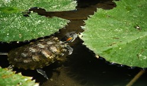

Sarasbaug is a major landmark in the city of Pune in India. The place where the park now stands was once occupied by a small lake. However, the lake dried up and was later developed into Sarasbaug. The whole 25-acre (10 ha) complex is known as Sarasbaug. The Ganesh temple in Saras Baug is also known as Talyatla Ganapati which translates as the Ganapati of the lake. Sarasbaug is located within a km from Swargate Bus Station which is a ground transport station for Pune and around 6 km from Pune Railway Station.
Timings: 6am to 9pm
